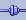

T-series Brukerveiledning
Innhold
Menylinjen
Menylinjen har følgende nedtrekksmenyer:
-
Fil har disse valgene:
- Skriv ut tidsserien til printer/fil med Skriv ut..
- Lagre tidsserien som bilde med Lagre bilde..
Valg her er XPM/BMP/PNG og EPS.
PNG er standardinstilling. Alle untatt EPS er såkalte
screendumps, dvs. du får det du har innstillt på skjermen
også som bilde. EPS er dynamisk...
- Lag ditt eget posisjonsfilter med
Endre Filter
- Avslutt programmet med Avslutt
-
Valg har disse valgene:
- Du kan lagre den nåværende situasjonen
av vindu-størrelse/plassering/, sted, type,
modell med Lagre valg den kommer opp
neste gang når du starter T-series, eller når du velger
Gjenopprett valg
- Lagringen skjer automatisk når du avslutter
hvis Lagre ved avslutt er på.
- Vis stedsnavn (DIANA)
viser alle stedsnavn på kartet når man er koblet mot
DIANA... kan være forstyrrende med store lister
men greit ved små utplukk....
- Vis valgt stedsnavn (DIANA)
viser bare navnet på stedet som er valgt fra diana
(anbefales)
- Vis tidsmarkør viser en
liten grå strek i diagrammet som representerer
nåtiden. Streken er koblet mot en intern klokke
og er dermed alltid korrekt....
-
Hjelp har disse valgene:
- Brukerveiledning.. viser dette dokumentet
- Nyheter.. gir kortfattet liste over nyheter i siste
versjon. Se her
- Om T-series.. gir versjonsnummer etc
Kobling mot DIANA
T-series kan koble seg opp mot en diana-instans
dersom du i diana har åpnet for en slik kobling. Koblingen skjer
via en ekstern (socket-basert) server som starter opp automatisk;
enten av T-series eller diana. Du kan manuelt overstyre oppkoblingen
ved å trykke på denne knappen i statuslinjen:

Etter oppkobling vil følgende skje:
- T-series vil sende over en komplett liste over de posisjoner
systemet kjenner - og disse vil dukke opp i diana som ikoner på
kartet. Ikonene ser slik ut:

- Ved å velge en posisjon på diana-kartet vil diana
sende tilbake stednavn til T-series, som da vil bla opp det
tilhørende diagram.
- Ved å klikke på
 vil T-series sende
over en likt utseende peker til DIANA for å fremheve den
aktuelle posisjonen.
vil T-series sende
over en likt utseende peker til DIANA for å fremheve den
aktuelle posisjonen.
Posisjonsfilter
Det er mulig å begrense antall viste stasjoner. For dette
finnes det en liten filter  .
Denne filteren har en standardinstilling, som kan endres av
brukeren. Et endret filter kan lagres,
for dette finnes det en dialog i Fil menyen
som heter Endre filter.
.
Denne filteren har en standardinstilling, som kan endres av
brukeren. Et endret filter kan lagres,
for dette finnes det en dialog i Fil menyen
som heter Endre filter.
Dialogen har to lister. En som inneholder alle stasjoner (venstre),
og en som symboliserer det private filteret (høyre).
Man kan velge posisjoner i filteret og trykke på
 ( eller DEL-tasten ) for å slette valget.
Trykke man på
( eller DEL-tasten ) for å slette valget.
Trykke man på  (eller SPACE-Tasten)
kopieres posisjonen som er valgt i den store listen over til din
filter.
(eller SPACE-Tasten)
kopieres posisjonen som er valgt i den store listen over til din
filter.
filteret kan settes tilbake til standardfilteret ved å trykke
på 
Liste over kortkommandoer
| Generelle kortkommandoer
|
| Brukerveiledning
| F1
|
| Bytt modell
| Ctrl-Pil opp/ned
|
| Skriv ut
| Ctrl-P
|
| Avslutt
| Ctrl-Q
|
Last modified: Fri Nov 15 16:28:19 GMT 2002